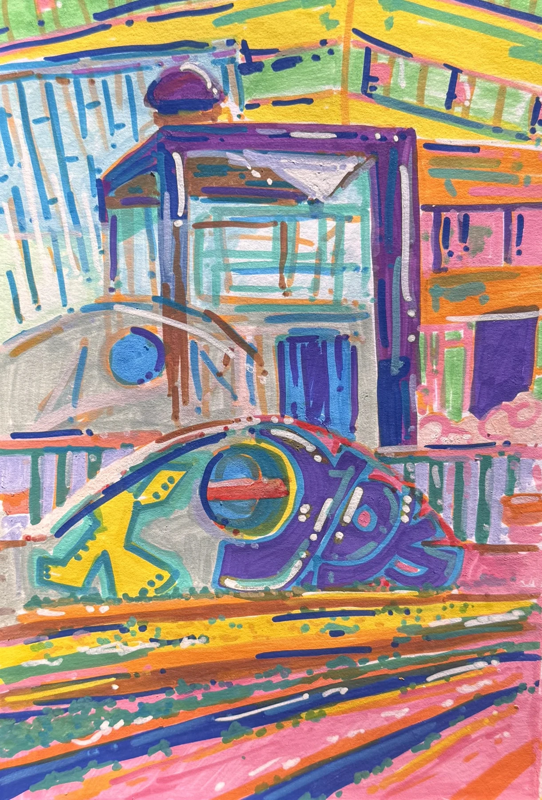

Portfolio
About / Contact
Mara Brandsen
Hi, I’m
Artist
Engineer
Portfolio
About & Contact
read me
This kaleidoscope is made from my artwork. You can change the kaleidoscope with the sliders, and
click anywhere
on the screen to change the artwork it is based on.
Change artwork
Symmetry
Zoom
Turn

Pause movement Ⅱ
Save this view · PNG
The science behind it
Mara’s order
Rainbow order
By kind
Shuffle ↻
Grid size
×
A CLOSER LOOK
Like what you see? Contact me →